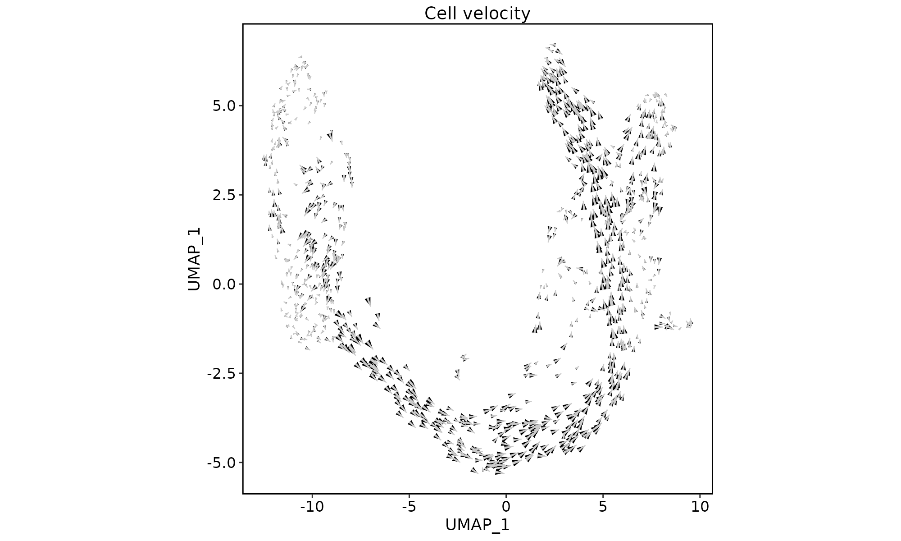
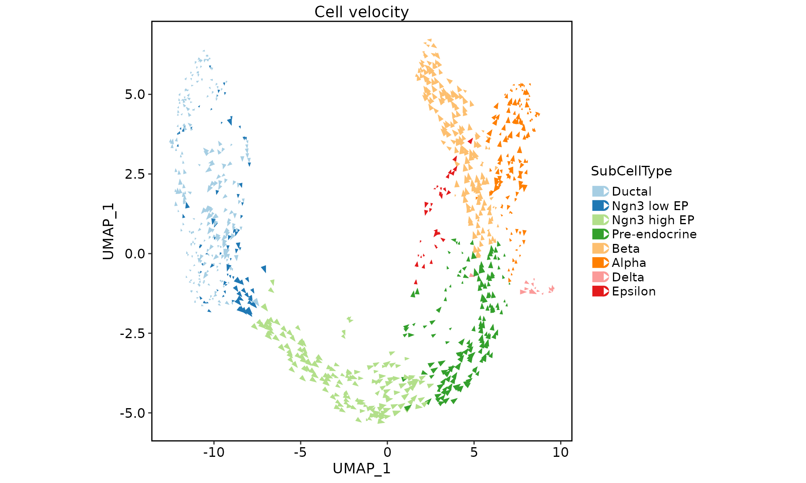
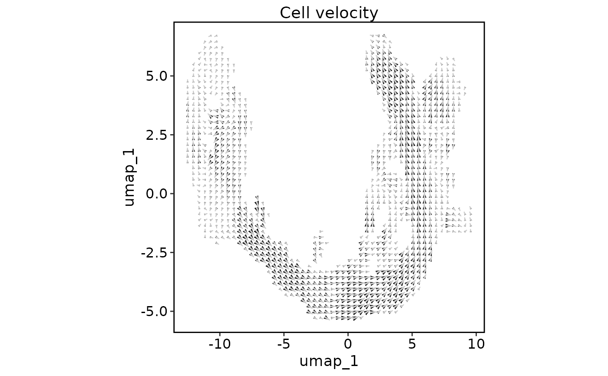
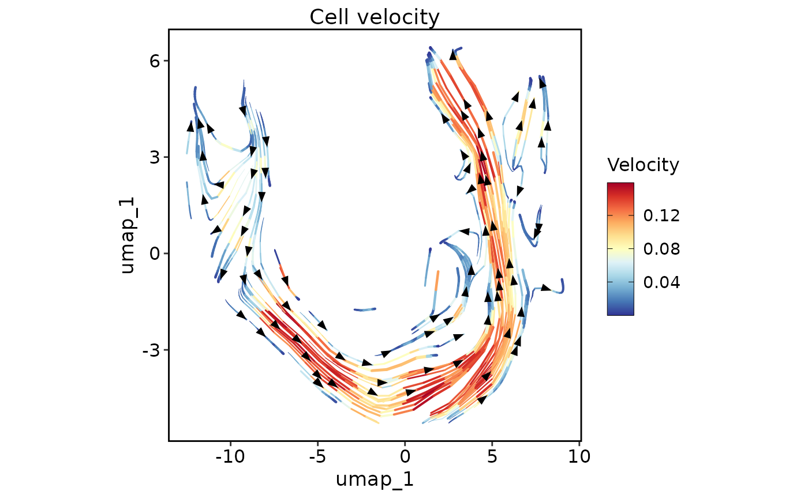
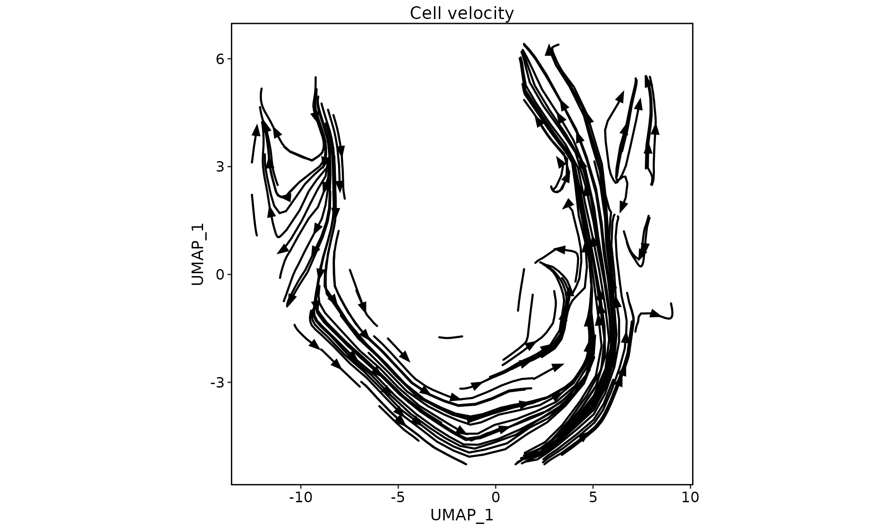
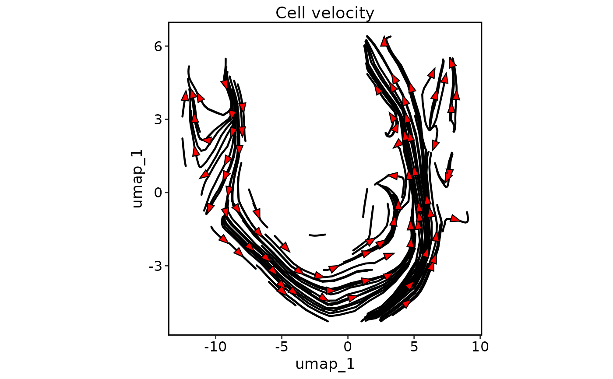

This function creates a velocity plot for a given Seurat object. The plot shows the velocity vectors of the cells in a specified reduction space.
Usage
VelocityPlot(
srt,
reduction,
dims = c(1, 2),
cells = NULL,
velocity = "stochastic",
plot_type = c("raw", "grid", "stream"),
group_by = NULL,
group_palette = "Paired",
group_palcolor = NULL,
n_neighbors = ceiling(ncol(srt@assays[[1]])/50),
density = 1,
smooth = 0.5,
scale = 1,
min_mass = 1,
cutoff_perc = 5,
arrow_angle = 20,
arrow_color = "black",
streamline_L = 5,
streamline_minL = 1,
streamline_res = 1,
streamline_n = 15,
streamline_width = c(0, 0.8),
streamline_alpha = 1,
streamline_color = NULL,
streamline_palette = "RdYlBu",
streamline_palcolor = NULL,
streamline_bg_color = "white",
streamline_bg_stroke = 0.5,
aspect.ratio = 1,
title = "Cell velocity",
subtitle = NULL,
xlab = NULL,
ylab = NULL,
legend.position = "right",
legend.direction = "vertical",
theme_use = "theme_scp",
theme_args = list(),
return_layer = FALSE,
seed = 11
)Arguments
- srt
A Seurat object.
- reduction
Name of the reduction in the Seurat object to use for plotting.
- dims
Indices of the dimensions to use for plotting.
- cells
Cells to include in the plot. If NULL, all cells will be included.
- velocity
Name of the velocity to use for plotting.
- plot_type
Type of plot to create. Can be "raw", "grid", or "stream".
- group_by
Name of the column in the Seurat object metadata to group the cells by. Defaults to NULL.
- group_palette
Name of the palette to use for coloring the groups. Defaults to "Paired".
- group_palcolor
Colors to use for coloring the groups. Defaults to NULL.
- n_neighbors
Number of neighbors to include for the density estimation. Defaults to ceiling(ncol(srt@assays[[1]]) / 50).
- density
Propotion of cells to plot. Defaults to 1 (plot all cells).
- smooth
Smoothing parameter for density estimation. Defaults to 0.5.
- scale
Scaling factor for the velocity vectors. Defaults to 1.
- min_mass
Minimum mass value for the density-based cutoff. Defaults to 1.
- cutoff_perc
Percentile value for the density-based cutoff. Defaults to 5.
- arrow_angle
Angle of the arrowheads. Defaults to 20.
- arrow_color
Color of the arrowheads. Defaults to "black".
- streamline_L
Length of the streamlines. Defaults to 5.
- streamline_minL
Minimum length of the streamlines. Defaults to 1.
- streamline_res
Resolution of the streamlines. Defaults to 1.
- streamline_n
Number of streamlines to plot. Defaults to 15.
- streamline_width
Width of the streamlines. Defaults to c(0, 0.8).
- streamline_alpha
Alpha transparency of the streamlines. Defaults to 1.
- streamline_color
Color of the streamlines. Defaults to NULL.
- streamline_palette
Name of the palette to use for coloring the streamlines. Defaults to "RdYlBu".
- streamline_palcolor
Colors to use for coloring the streamlines. Defaults to NULL.
- streamline_bg_color
Background color of the streamlines. Defaults to "white".
- streamline_bg_stroke
Stroke width of the streamlines background. Defaults to 0.5.
- aspect.ratio
Aspect ratio of the plot. Defaults to 1.
- title
Title of the plot. Defaults to "Cell velocity".
- subtitle
Subtitle of the plot. Defaults to NULL.
- xlab
x-axis label. Defaults to NULL.
- ylab
y-axis label. Defaults to NULL.
- legend.position
Position of the legend. Defaults to "right".
- legend.direction
Direction of the legend. Defaults to "vertical".
- theme_use
Name of the theme to use for plotting. Defaults to "theme_scp".
- theme_args
List of theme arguments for customization. Defaults to list().
- return_layer
Whether to return the plot layers as a list. Defaults to FALSE.
- seed
Random seed for reproducibility. Defaults to 11.
Examples
data("pancreas_sub")
pancreas_sub <- RunSCVELO(srt = pancreas_sub, group_by = "SubCellType", linear_reduction = "PCA", nonlinear_reduction = "UMAP", return_seurat = TRUE)
#> 'misc' slot is not converted.
#> 'tools' slot is not converted.
#> Warning: Keys should be one or more alphanumeric characters followed by an underscore, setting key from variance_stochastic_ to variancestochastic_
#> Warning: Keys should be one or more alphanumeric characters followed by an underscore, setting key from variance_velocity_ to variancevelocity_
VelocityPlot(pancreas_sub, reduction = "UMAP")

VelocityPlot(pancreas_sub, reduction = "UMAP", group_by = "SubCellType")

VelocityPlot(pancreas_sub, reduction = "UMAP", plot_type = "grid")

VelocityPlot(pancreas_sub, reduction = "UMAP", plot_type = "stream")

VelocityPlot(pancreas_sub, reduction = "UMAP", plot_type = "stream", streamline_color = "black")

VelocityPlot(pancreas_sub, reduction = "UMAP", plot_type = "stream", streamline_color = "black", arrow_color = "red")
